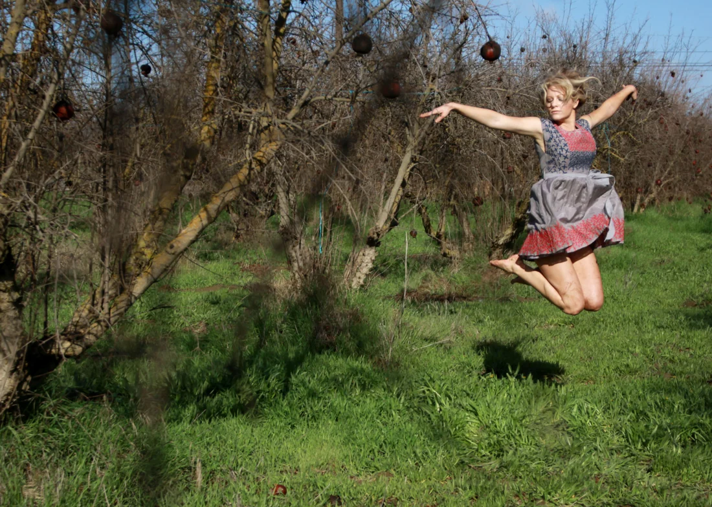

Visual judgment
Composition, light, color, and the small details that make a photograph convincing.
VISALIA, CALIFORNIA · AVAILABLE FOR OPPORTUNITIES
Finding the extraordinary in the everyday.
Portraits, photojournalism, and moments that matter — seen through a thoughtful, human lens.
Rooted in real life.
Looking toward what’s next.

01 / THE PHOTOGRAPHS
From a split second on the field to a quiet moment between people. An archive of observation, connection, and craft.
A collection of moments. A way of seeing.
02 / BEHIND THE LENS
I’m Corey Ralston, a photographer, photojournalist, editor, and communications professional based in Visalia, California.
My background includes serving as Performing Arts Editor and Lead Photojournalist for Fresno Life Magazine and working with regional press. Across assignments, image editing, and visual storytelling, my focus is the same: notice the details, understand the context, and make the story clear.
View magazine cover PDF (opens a new tab)03 / A HUMAN PERSPECTIVE ON AI
I’m interested in bringing my photography and editorial background to AI training and image evaluation — helping connect visual technology with the nuance of real images.
Let’s talk about an opportunityComposition, light, color, and the small details that make a photograph convincing.
Reading what an image communicates, how it feels, and where its meaning comes from.
A considered approach to image selection, consistency, and clear visual communication.
HAVE SOMETHING IN MIND?
Photography · Editorial · AI image evaluation opportunities